Section 3.1 — Day 1
Does $(3,1)$ satisfy both equations in the system $x+y=4$ and $2x-y=5$? State yes or no and name the equation that proves your answer.
Which point is the $y$-intercept of a line that crosses the $y$-axis at $6$?
Spiral: Write an equation for a relationship whose graph would pass through $(0,9)$ and increase by $4$ in output for every $1$ increase in input.
Formative Spiral: Use the diamond. The top number is the product of the two side numbers, and the bottom number is their sum. Fill in the missing cell(s).

Section 3.1 — Day 2
When a graph of a system shows one intersection point, how many ordered-pair solutions does the system have?
A table shows that $y$ decreases by $6$ whenever $x$ increases by $2$. What is the slope?
Spiral: For the table, identify the output when the input is $-1$.
| $x$ | -2 | -1 | 0 | 1 |
|---|---|---|---|---|
| $y$ | 9 | 6 | 3 | 0 |
Formative Spiral: Use the diamond. The top number is the product of the two side numbers, and the bottom number is their sum. Fill in the missing cell(s).
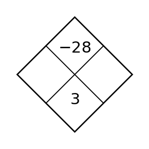
Section 3.1 — Day 3
Choose whether to multiply the first equation, second equation, or neither before eliminating. Then solve.
$$\begin{aligned}2x+3y=18\\5x-3y=10\end{aligned}$$
| $x$ | 1 | 3 | 6 | 10 |
|---|---|---|---|---|
| $y$ | 5 | 11 | 20 | 32 |
The input gaps are not all the same. Determine whether the rate of change is constant, and show the rate you used.
Spiral: Complete the input-output table for $g(x)=\sqrt{x+4}$.
| $x$ | -4 | 0 | 5 | 12 |
|---|---|---|---|---|
| $g(x)$ |
Formative Spiral: Use the diamond. The top number is the product of the two side numbers, and the bottom number is their sum. Fill in the missing cell(s).
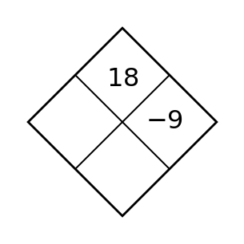
Section 3.2 — Day 1
After substituting $y=x+6$ into $2x+y=15$, what one-variable equation should be solved?
A line has slope $5$ and $y$-intercept $-2$. Write the equation.
Spiral: Use substitution to decide whether $3(x+4)$ and $3x+12$ are equivalent for $x=5$ and $x=-2$.
Formative Spiral: Use the diamond. The top number is the product of the two side numbers, and the bottom number is their sum. Fill in the missing cell(s).

Section 3.2 — Day 2
Why is substitution efficient when one equation is $x=8-y$?
Which point is the $y$-intercept of a line that crosses the $y$-axis at $6$?
Spiral: If a rule gives output $0$ for input $-3$, write the ordered pair.
Formative Spiral: Use the diamond. The top number is the product of the two side numbers, and the bottom number is their sum. Fill in the missing cell(s).
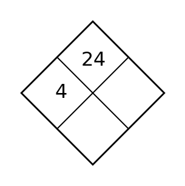
Section 3.2 — Day 3
Use substitution to solve the system. Show the one-variable equation that results from your substitution.
$$\begin{aligned}m=2n+1\\3m+n=25\end{aligned}$$
| Day | 0 | 1 | 2 | 3 | 4 |
|---|---|---|---|---|---|
| Height (cm) | 12 | 15 | 18 | 21 | 24 |
Use the table to write a rate-of-change statement in context. Then predict the height on day $9$.
Spiral: A population starts at $200$ and is multiplied by $1.15$ each year. Write an equation and state whether the model shows growth or decay.
Formative Spiral: Use the diamond. The top number is the product of the two side numbers, and the bottom number is their sum. Fill in the missing cell(s).
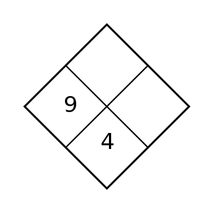
Section 3.3 — Day 1
In a ticket context, if $s$ is student tickets and $a$ is adult tickets, what does $s+a=120$ represent?
| Hours | 1 | 3 | 5 | 7 |
|---|---|---|---|---|
| Pay | 18 | 46 | 74 | 102 |
Write an equation for pay in terms of hours. Interpret the starting value in the equation.
Spiral: A movie rental service charges \$6 plus \$3 per movie. Write and solve an equation to find how many movies can be rented for \$27.
Formative Spiral: Use the diamond. The top number is the product of the two side numbers, and the bottom number is their sum. Fill in the missing cell(s).
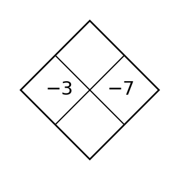
Section 3.3 — Day 2
In a mixture problem with $x$ pounds of nuts and $y$ pounds of dried fruit, what would $x+y=25$ represent?
Use the line shown to identify whether the $y$-intercept is positive, negative, or zero.

Spiral: The equation $y=2|x-5|+1$ belongs to which common family?
Formative Spiral: Use the diamond. The top number is the product of the two side numbers, and the bottom number is their sum. Fill in the missing cell(s).
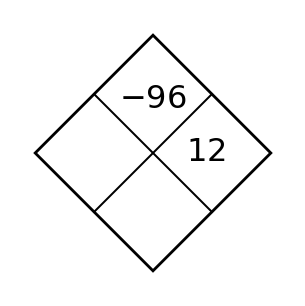
Section 3.3 — Day 3
At a fundraiser, small candles cost \$4 and large candles cost \$7. The group sold 63 candles for \$330. Write and solve a system for small and large candles.
The graph shows a distance model. Estimate the starting distance and rate of change. Then predict the distance at $6$ minutes.

Spiral: Use the diamond to find two numbers with product $-24$ and sum $2$. Then write a related factored form for $x^2+2x-24$.

Formative Spiral: Use the diamond. The top number is the product of the two side numbers, and the bottom number is their sum. Fill in the missing cell(s).
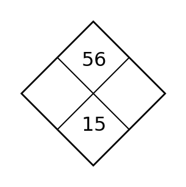
Section 3.4 — Day 1
For $y\ge 2x-1$, should the boundary line be solid or dashed?
A line has slope $4$ and passes through $(2,1)$. Make a table with three points, graph it, and decide whether $(0,-7)$ should also be on the line.

Spiral: Write an equation for a relationship whose graph would pass through $(0,9)$ and increase by $4$ in output for every $1$ increase in input.
Formative Spiral: Use the diamond. The top number is the product of the two side numbers, and the bottom number is their sum. Fill in the missing cell(s).

Section 3.4 — Day 2
What does a shaded half-plane represent?
A line has slope $5$ and $y$-intercept $-2$. Write the equation.
Spiral: Name one feature you can use as evidence for a family choice besides the graph shape.
Formative Spiral: Use the diamond. The top number is the product of the two side numbers, and the bottom number is their sum. Fill in the missing cell(s).

Section 3.4 — Day 3
Use the displayed shaded region to write one test point that satisfies the inequality and one that does not. Then explain how you know each point belongs in its category.

A line has slope $4$ and passes through $(2,1)$. Make a table with three points, graph it, and decide whether $(0,-7)$ should also be on the line.
Spiral: Check the proposed solution. A student says $x=5$ solves $7x-4=31$. Substitute and decide whether the solution is correct.
Formative Spiral: Use the diamond. The top number is the product of the two side numbers, and the bottom number is their sum. Fill in the missing cell(s).
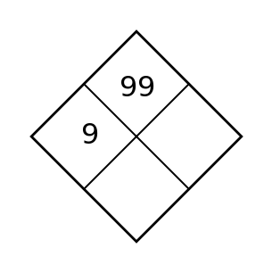
Section 3.5 — Day 1
What does “feasible point” mean in a system of inequalities?
Use the line shown to identify whether the $y$-intercept is positive, negative, or zero.
Spiral: Check the proposed solution. A student says $x=5$ solves $7x-4=31$. Substitute and decide whether the solution is correct.
Formative Spiral: Use the diamond. The top number is the product of the two side numbers, and the bottom number is their sum. Fill in the missing cell(s).
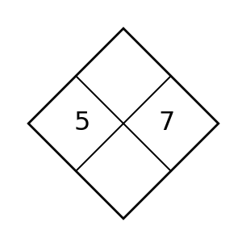
Section 3.5 — Day 2
What does a vertex of a feasible region usually represent?
Use the graph shown to identify the $y$-intercept before writing any equation.

Spiral: Which operation is shown by the parentheses in $5(2x-1)$?
Formative Spiral: Use the diamond. The top number is the product of the two side numbers, and the bottom number is their sum. Fill in the missing cell(s).
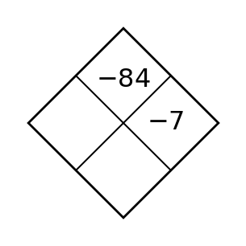
Section 3.5 — Day 3
A club can spend at most \$120 on notebooks and pens. Notebooks cost \$4 and pens cost \$2. Let $n$ be notebooks and $p$ be pens. Write a cost inequality and two nonnegative constraints.
| Hours | 1 | 3 | 5 | 7 |
|---|---|---|---|---|
| Pay | 18 | 46 | 74 | 102 |
Write an equation for pay in terms of hours. Interpret the starting value in the equation.
Spiral: Write an equation for a relationship whose graph would pass through $(0,9)$ and increase by $4$ in output for every $1$ increase in input.
Formative Spiral: Use the diamond. The top number is the product of the two side numbers, and the bottom number is their sum. Fill in the missing cell(s).
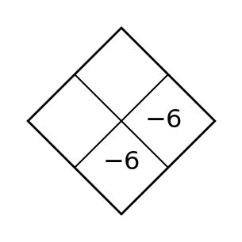